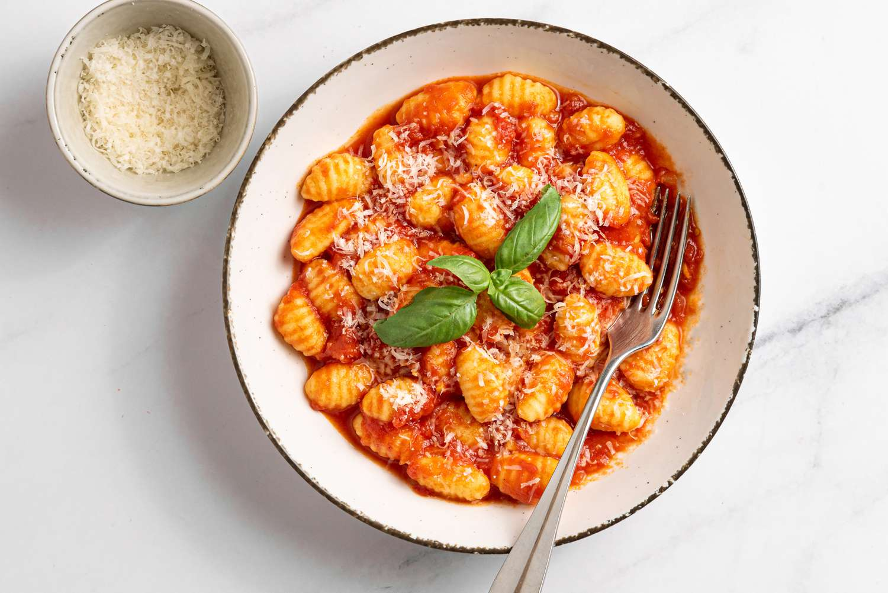

Description
Gnocchi (singular gnocco) are Italian dumplings made with flour, eggs, and potatoes. Gnocchi can be served in tomato sauce, tossed with pesto, or sautéed with butter and herbs.
Ingredients
- Potatoes: Use starchy potatoes, such as russets.
- Flour: All-purpose flour absorbs moisture and helps create gluten.
- Egg: An egg lends moisture and acts as a binder, which means it helps hold the dumplings together.
Steps
- Boil and mash the potatoes.
- Combine the ingredients, then knead into a ball.
- Shape the dough into "snakes."
- Cut the snakes into pieces.
- Boil and drain the gnocchi.
Back to main page